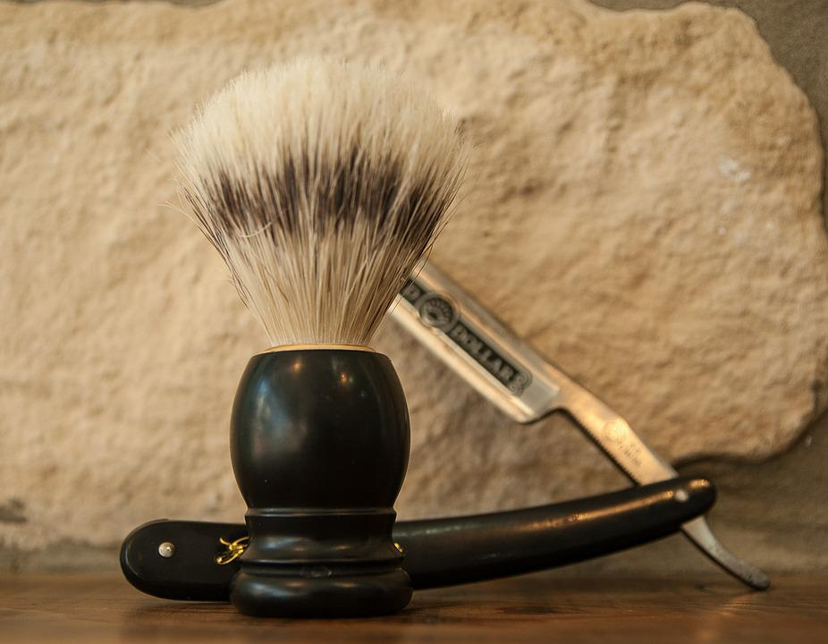

Sobre a Barbearia Alura
Localizado no coração da cidade a Barbearia Alura traz para o mercado o que há de melhor para o seu cabelo e barba. Fundada em 2019, a Barbearia Alura já é destaque na cidade e conquista novos clientes a cada dia.
Nossa missão é: "Proporcionar auto-estima e qualidade de vida aos clientes".
profissionais experientes e antenados às mudanças no mundo da moda. O atendimento possui padrão de excelência e agilidade, garantindo qualidade e satisfação dos nossos clientes.
Nosso estabelecimento
Nosso estabelecimento está localizado no coração da cidade.
Benefícios
- Atendimento aos clientes
- Espaço diferenciado
- Localizacao
- Profissionais qualificados